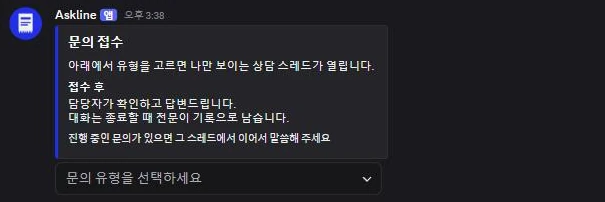
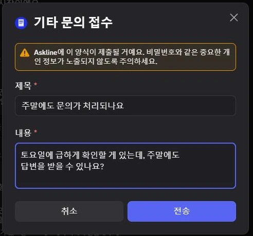
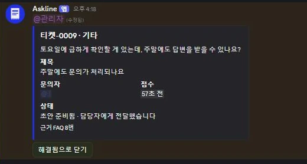
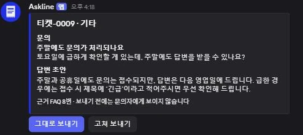
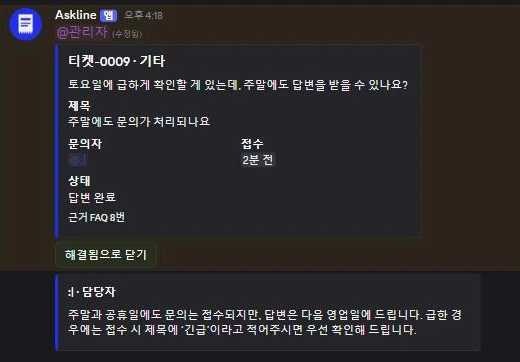
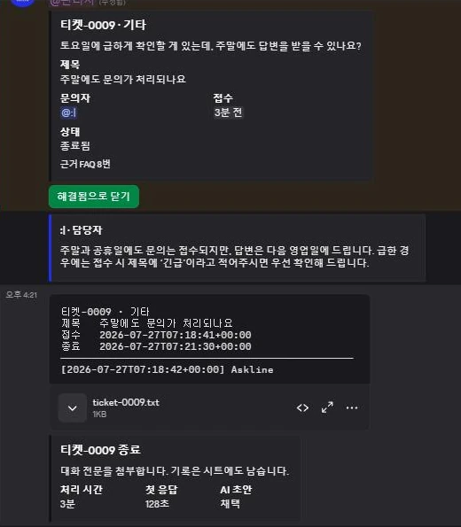
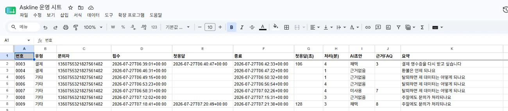
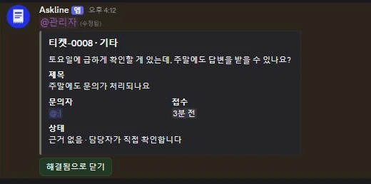
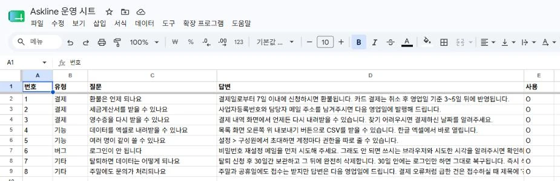

CASE STUDY/askline
문의를 비공개 스레드로 접수하고, AI가 만든 답변 초안을 담당자가 승인해 보내는 디스코드 봇
봇은 서버에 초대해야 동작하므로 웹 데모 대신 실제 화면을 순서대로 올립니다.









작은 팀의 고객 문의는 공개 채널과 DM으로 흩어집니다. 누가 언제 무엇을 물었는지, 얼마 만에 답했는지가 남지 않고 같은 질문에 매번 처음부터 답하게 됩니다. 그렇다고 AI에 맡기자니 이번엔 다른 걱정이 생깁니다. 봇이 없는 사실을 지어내면 그건 회사가 한 말이 되고, 잘못 나간 답변은 주워담을 수 없습니다.
Askline은 그 둘 사이를 갈랐습니다. AI는 초안까지만 만들고 담당자에게 DM으로 보냅니다. 발송 버튼을 누르는 것은 사람이고, 자동으로 보내는 경로는 아예 없습니다. 그리고 근거로 삼을 FAQ가 없으면 답을 지어내지 않고 사람을 부릅니다.
Python과 discord.py로 만들었고, 티켓 원장은 SQLite, 답변 초안은 Groq, 지식과 기록은 구글 시트를 씁니다. 티켓은 채널을 새로 만들지 않고 비공개 스레드로 열어 문의자와 담당자만 보게 했습니다. 접수 패널과 각 티켓의 버튼은 봇을 다시 켜도 그대로 동작합니다.
AI를 통제하는 방식이 이 작업의 중심입니다. 형식은 모델이 지키고, 근거는 코드가 검증합니다. 출력 JSON은 모델이 스키마를 벗어날 수 없도록 강제하지만, 스키마로는 "이 FAQ 번호가 실제로 존재하는가"를 막을 수 없습니다. 없는 번호는 스키마상 완벽히 유효한 정수이기 때문입니다. 그래서 근거 검증은 순수 함수로 따로 두고, 존재하지 않는 번호를 인용하면 근거 없음으로 강등하고 근거 없이 나온 초안은 버립니다. 이 규칙들은 단위 테스트로 고정되어 있습니다.
모델로 나가는 문의 본문에는 마스킹을 겁니다. 전화번호·이메일·카드번호·주민등록번호를 가린 사본만 보내고, 담당자가 보는 화면과 대화 전문에는 원문을 그대로 둡니다. 보내지 않은 데이터는 샐 수 없습니다. 계좌번호는 은행마다 자릿수가 달라 오탐이 커서 다루지 않았습니다.
기록은 SQLite가 원본이고 구글 시트는 운영자용 사본입니다. 시트 적재가 실패해도 기록은 유실되지 않고 경고만 남습니다. 같은 이유로 모델 호출이 실패해도 접수·상담·종료는 그대로 동작합니다 — 키를 일부러 틀린 값으로 바꿔 확인했습니다. 초안이 없을 뿐입니다.
운영자가 코드를 몰라도 답변을 바꿀 수 있어야 인수인계가 끝납니다. FAQ는 시트에 있고 봇은 그것을 1분 간격으로 다시 읽습니다. 시트에 한 줄 추가하면 배포 없이 답변이 달라지고, 사용 열을 비우면 그 항목만 잠시 끌 수 있습니다.